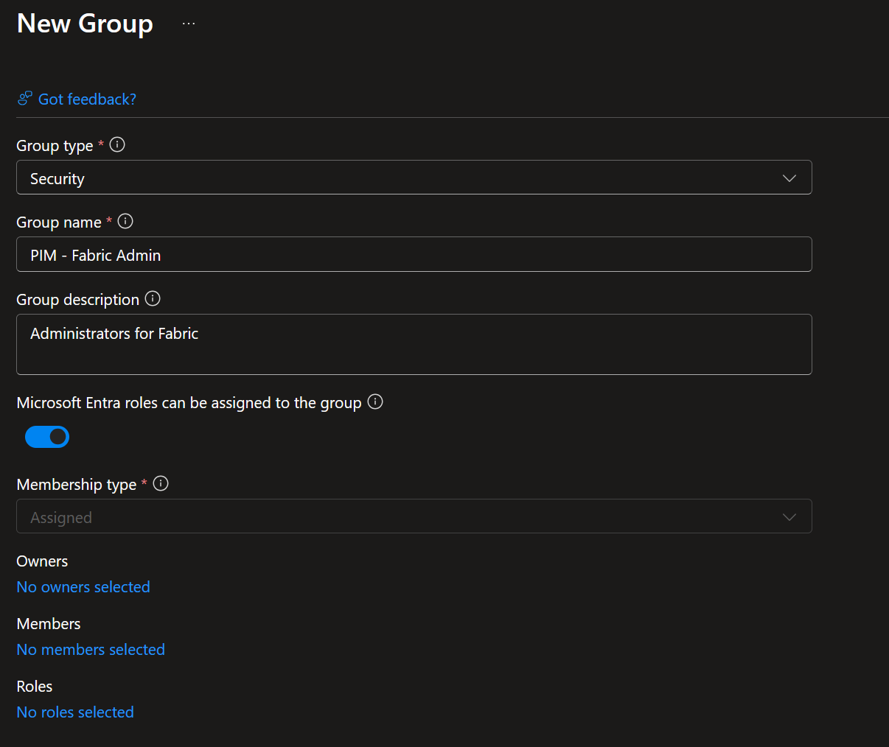
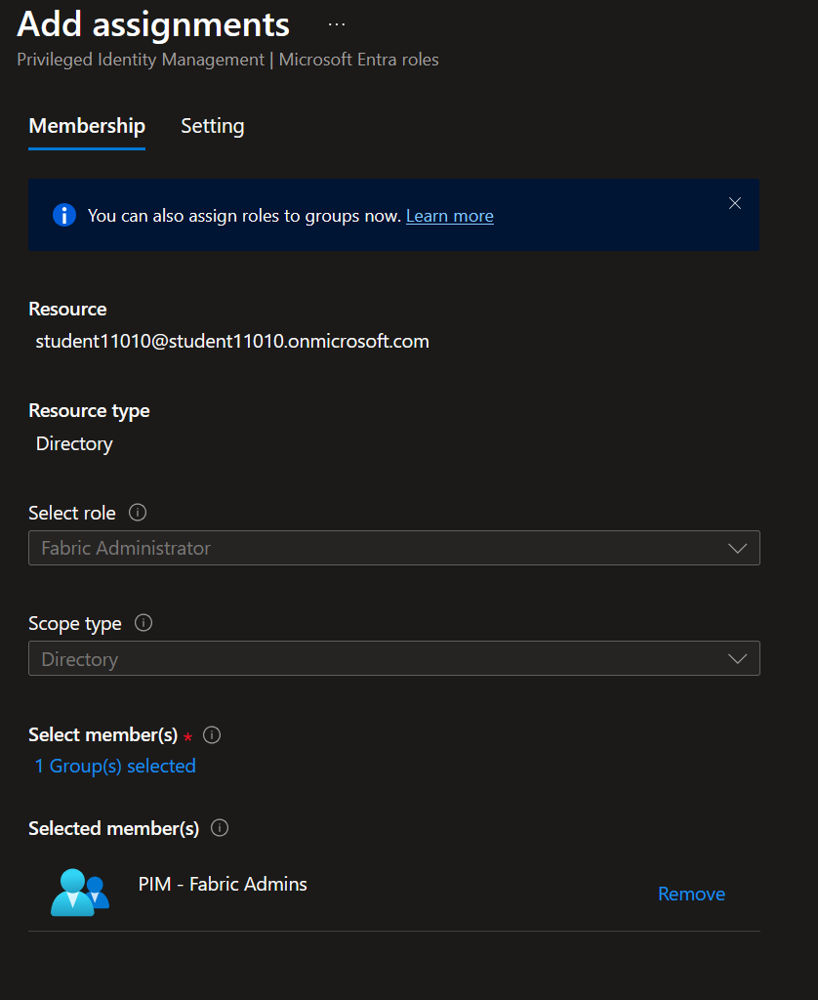
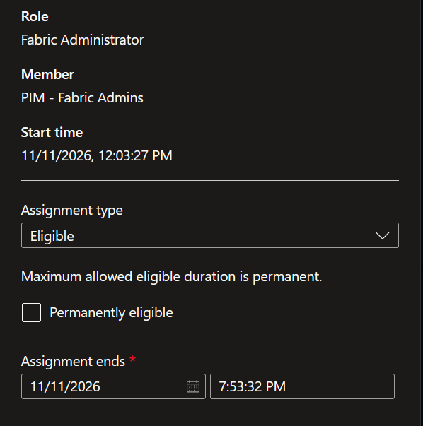
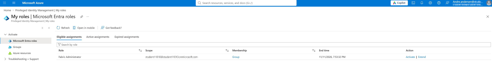

DateNov 2026
EnvironmentMicrosoft 365 Developer Tenant
LicenseEntra ID P2
DifficultyIntermediate
Overview
Privileged Identity Management (PIM) is a Microsoft Entra ID feature that enables organizations to implement just-in-time administrative access. Instead of assigning permanent privileged roles, administrators can activate roles only when needed, reducing the risk of unauthorized access and improving overall security.
Objectives
- Implement Privileged Identity Management (PIM) by assigning privileged roles as eligible rather than permanently active.
01
Make a PIM group
Describe what you did in this step.

02
Add the role to the group
Describe what you did in this step.

03
Set Assignment type and time
Describe what you did in this step.

Result
What worked in the end? Feel free to add a final screenshot.

Lessons Learned
Write briefly about challenges you ran into and what you would do differently.